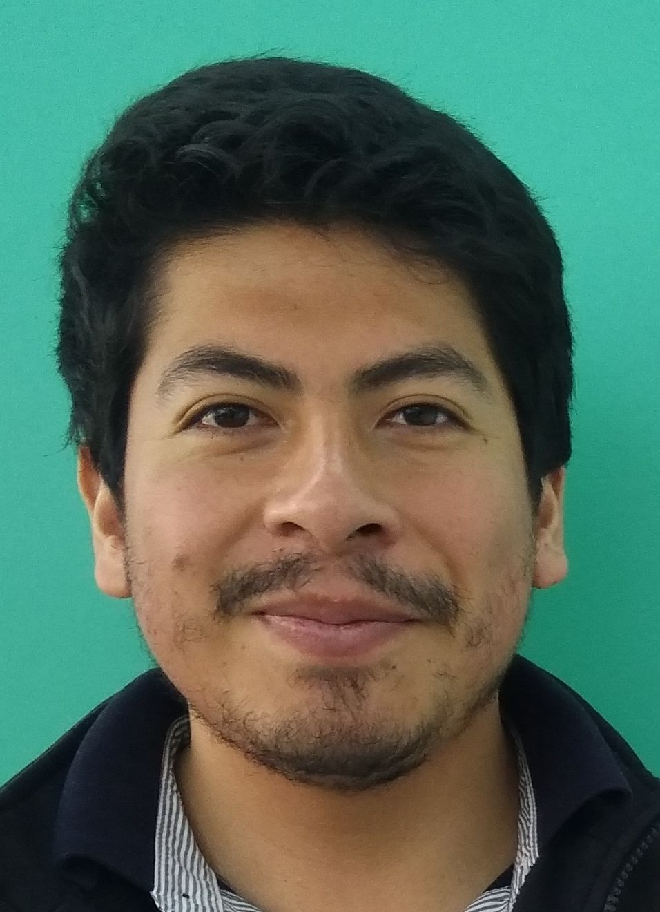

<ion-content padding class="imagen2">

  <ion-card>
    <ion-item>
      <ion-avatar slot="start">
        
      </ion-avatar>
      <ion-label>
        <h3>Fernando Sanmartin</h3>
        <p>Marzo 04, 1992</p>
      </ion-label>
    </ion-item>
  
    <ion-grid>
      <h3>Historial Laboral</h3>
  <br>
      <ion-row>
          <ion-col>
          <div>
             
            <p></p>
            <div class="ion-text-center">
              Stupendo s.a
          <p></p>
          ASISTENTE DE
          QUALITY
          ASSURANCE
          
  </div>
          </div>
          <p></p>
        </ion-col>

        <ion-col>
          <ul class="list">
            <li class="item">Estudiar los sistemas organizacionales de los clientes.</li>
            <li class="item">Traducir los requisitos del negocio en diseños funcionales</li>
            <li class="item">Capacitar al personal y a los usuarios en diversos programas informáticos.</li>
          </ul>
            
        
        </ion-col>
      </ion-row>
    </ion-grid>
  
    
    <ion-grid>
      <ion-row>
          <ion-col>
          <div>
             
            <p></p>
            <div class="ion-text-center">
              Escuela Politécnica Nacional
          <p></p>
          ASISTENTE DEL AREA DE TI
  </div>
          </div>
          <p></p>
        </ion-col>

        <ion-col>
          <ul class="list">
            <li class="item">Datos recopilados y analizados usando varios marcos.</li>
            <li class="item">Solucionar problemas de hardware software.</li>
            <li class="item">Asistencia y respaldo a personal administrativo.</li>
          </ul>
          
        </ion-col>
      </ion-row>
    </ion-grid>
  
  
  
  
  
  </ion-card>
  </ion-content>
  
  